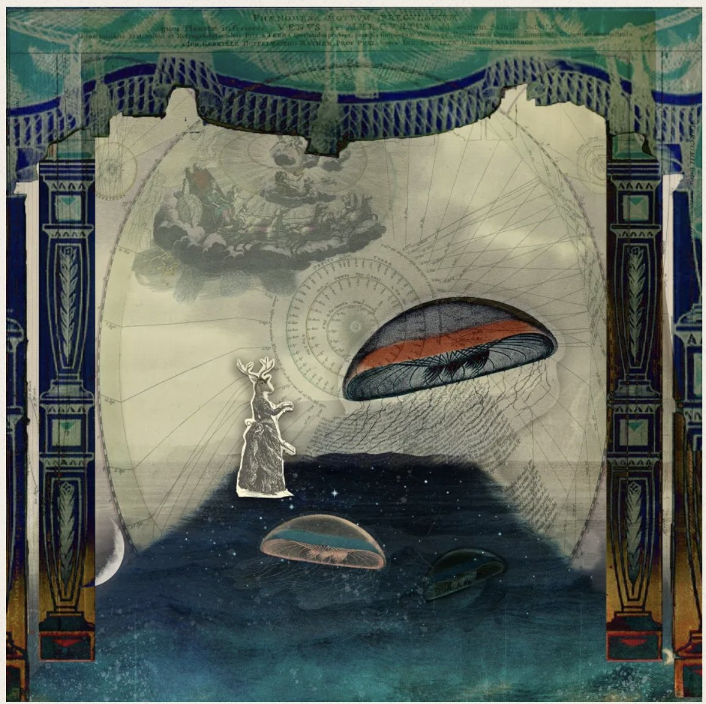

Public notice · Office of Poetic Logic
State your small problem. An improbable solution will be offered.
You choose a small problem. The Ministry deals a creature and a poetic form. Your solution will be issued as a broadside.

Form 1 · Your problem
Form 2 · Your creature and your poetic form
Creature (dealt)Starling
Form (dealt)sestina
Receive the Ministry's findings
Problem: Parking fines · Creature: Starling · Form: sestina
Small print
- The Ministry is open for questions. Answers are issued separately.
- Problems must be small. Large problems are referred elsewhere.
- The creature and the form are dealt, not chosen. The Ministry decrees. There are no appeals.
- Findings are issued as a single printed broadside, for public display.
- Earlier reports are held in the filing cabinet. The filing cabinet is not open to the public.
Recently issued
- Report 39 · Parking fines · Starling · Sestina Revenue is unchanged. Grievance is evenly distributed.
- Report 40 · Parking fines · Starling · Ballad He was only stopping for a minute.
- Report 50 · Unanswered emails · Woodpecker · Villanelle Woodpeckers do not drum on clouds.
- Report 54 · Long meetings · Domestic cat · Cyhydedd naw ban The Ministry has concluded that the cat is in a meeting.
- Report 61 · Cold tea · Minke whale · Pantoum The Ministry has referred the matter to Ethics.
- Report 62 · Litter · Electric eel · Free verse A small press has asked to publish the lay-by.
Rejected · Problem too large
Referred to Ethics
These problems were found to exceed the Ministry's remit. Findings had already been issued. See the policy on large problems.